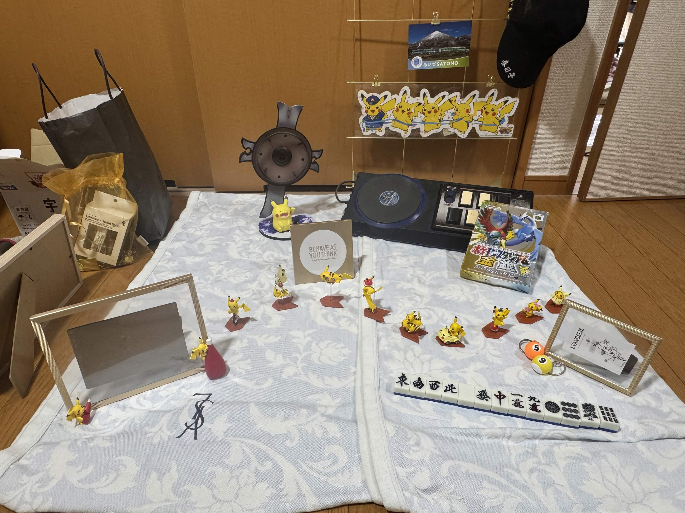

問題のイラストとウェルカムスペースにあるものを見比べてみましょう該当するアイテムは合計で６個ありますもしウェルカムスペースの写真を撮っていなければこのページの下部から確認することができます
この問題は「？」に当てはまる言葉が答えになりますまずは左の表を見ながら「青」が「ゆびわ」になる理由を考えてみましょう
まずは「好きなお酒」や「好きな食べ物」等について知る必要があります どこかに書かれていないか探してみましょう
まずは謎１～３の答えを埋めましょう 続いて一番下の行を完成させましょう 同じ数字が書かれたマスには同じ文字が入ります
